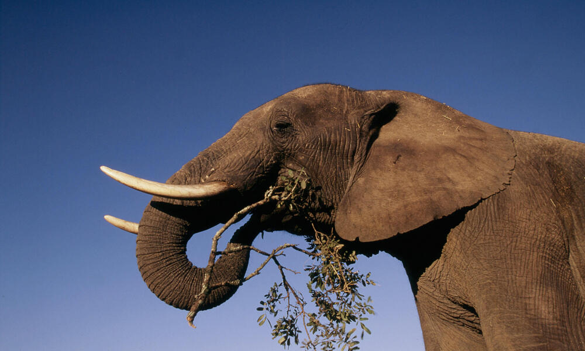
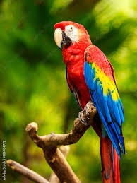
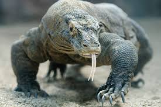
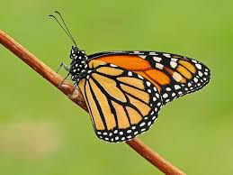
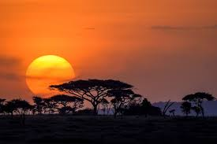
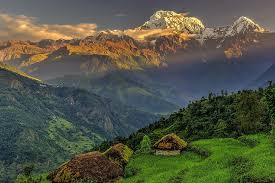
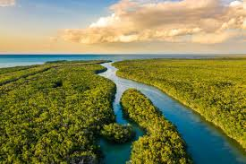

Biodiversity and Conservation on Land
Explore the data related to biodiversity and conservation efforts around the world. This table provides insights into various species and their conservation status.
| Category | Species/Area | Conservation Status | More Info |
|---|---|---|---|
| 🌳 Forests | Amazon Rainforest | Endangered ⚠️ | Show More ▼ |

The Amazon Rainforest faces severe threats from deforestation, illegal logging, agriculture, and climate change. Despite conservation efforts, including protected areas, reforestation projects, and indigenous land rights, deforestation rates remain high, driven by cattle ranching and soy farming. Governments, NGOs, and international organizations work to combat these threats through policies, enforcement, and sustainable development initiatives. However, challenges like weak law enforcement and economic pressures continue to put the rainforest at risk. Strengthening conservation strategies, supporting indigenous communities, and promoting sustainable land use are crucial to preserving the Amazon’s biodiversity and its role in regulating the global climate. Show Less ▲ |
|||
| 🐘 Mammals | African Elephant | Vulnerable ✅ | Show More ▼ |
|

African elephants are classified as endangered due to habitat loss, poaching for ivory, and human-wildlife conflict. Despite conservation efforts, including anti-poaching laws, protected reserves, and community-based initiatives, their populations continue to decline in some regions. Organizations and governments are working to strengthen law enforcement, expand protected areas, and promote coexistence with local communities. However, challenges such as illegal wildlife trade a nd climate change persist. Continued global support, stricter regulations, and sustainable conservation strategies are essential to ensuring the survival of African elephant populations. Show Less ▲ |
|||
| 🦜 Birds | Scarlet Macaw | Least Concern 🟢 | Show More ▼ |
|

The scarlet macaw is classified as least concern globally but faces conservation challenges in some regions due to habitat destruction, illegal pet trade, and deforestation. While populations remain stable in certain areas, they have declined in others, especially in Central America. Conservation efforts, including habitat protection, breeding programs, and anti-trafficking laws, help safeguard these vibrant birds. However, continued deforestation and poaching pose ongoing threats. Strengthening conservation initiatives and promoting sustainable land use are crucial for ensuring the long-term survival of scarlet macaws in the wild. Show Less ▲ |
|||
| 🦎 Reptiles | Komodo Dragon | Endangered ⚠️ | Show More ▼ |
|

The Komodo dragon is classified as **Endangered** due to habitat loss, climate change, and human activities. Native to a few Indonesian islands, its population is threatened by rising temperatures, habitat destruction, and illegal poaching. Conservation efforts include protected national parks, anti-poaching laws, and habitat restoration projects. However, climate change poses a significant long-term risk, as rising sea levels could shrink their already limited habitat. Strengthening conservation measures, enforcing wildlife protection laws, and promoting eco-tourism are essential for ensuring the survival of the Komodo dragon in the wild. Show Less ▲ |
|||
| 🦋 Insects | Monarch Butterfly | Near Threatened 🔶 | Show More ▼ |
|

Monarch butterflies are classified as **Endangered** due to habitat loss, climate change, and pesticide use. Their populations have declined significantly, especially in North America, where deforestation of overwintering sites in Mexico and the loss of milkweed—essential for their larvae—threaten their survival. Conservation efforts focus on habitat restoration, planting milkweed, and reducing pesticide use. However, extreme weather and environmental changes continue to impact their migration patterns. Protecting breeding and overwintering habitats, along with global conservation initiatives, is crucial to ensuring the survival of monarch butterflies. Show Less ▲ |
|||
| 🌾 Grasslands | Serengeti | Protected ✅ | Show More ▼ |
|

The **Serengeti ecosystem** is one of the most well-preserved natural landscapes, but it faces ongoing conservation challenges such as poaching, habitat encroachment, and climate change. Home to the famous Great Migration and diverse wildlife, including lions, elephants, and wildebeest, the Serengeti is protected by national parks and conservation areas. Efforts like anti-poaching patrols, sustainable tourism, and community involvement help safeguard its biodiversity. However, threats like infrastructure development and illegal hunting persist. Strengthening conservation policies, enforcing wildlife protection laws, and promoting eco-friendly initiatives are vital for preserving the Serengeti’s rich ecosystem. Show Less ▲ |
|||
| ⛰️ Mountains | Himalayas | Threatened ⚠️ | Show More ▼ |
|

The **Himalayas** face significant conservation challenges due to climate change, deforestation, habitat loss, and human activities. Rising temperatures are causing glacier melt, threatening water sources for millions. Deforestation and infrastructure development impact biodiversity, endangering species like the snow leopard and red panda. Conservation efforts include protected areas, afforestation projects, and community-driven initiatives. However, issues like illegal wildlife trade and unsustainable tourism persist. Strengthening environmental policies, promoting sustainable development, and addressing climate change impacts are crucial for preserving the fragile Himalayan ecosystem. Show Less ▲ |
|||
| 🌊 Wetlands | Everglades | Vulnerable ✅ | Show More ▼ |
|

The Everglades face ongoing conservation challenges due to habitat loss, pollution, invasive species, and climate change. Once a vast wetland, human development and water diversion projects have significantly reduced its size, threatening its unique ecosystem and species like the Florida panther and manatee. Conservation efforts, including Everglades restoration projects, wetland protection laws, and invasive species control, aim to restore water flow and protect biodiversity. However, rising sea levels and pollution remain serious threats. Continued investment in restoration, stricter environmental policies, and sustainable water management are essential to preserving the Everglades. Show Less ▲ |
|||